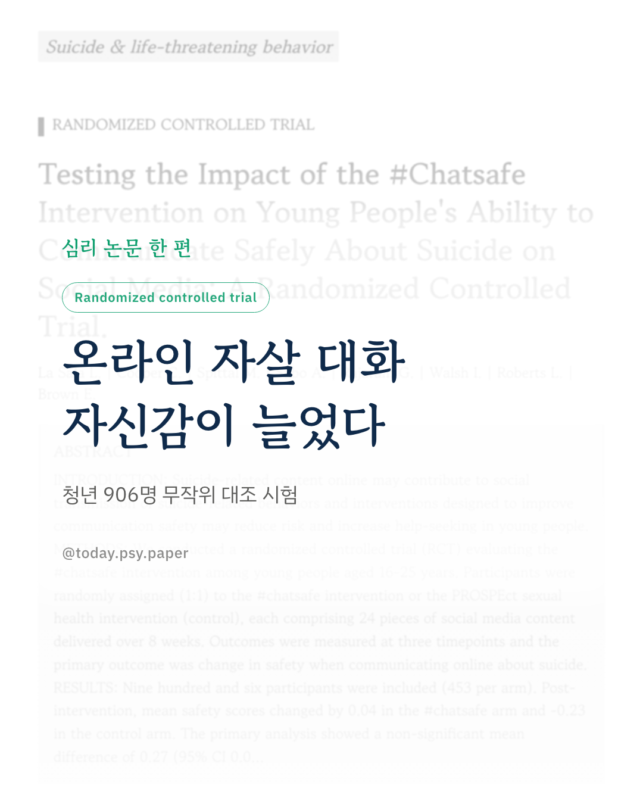
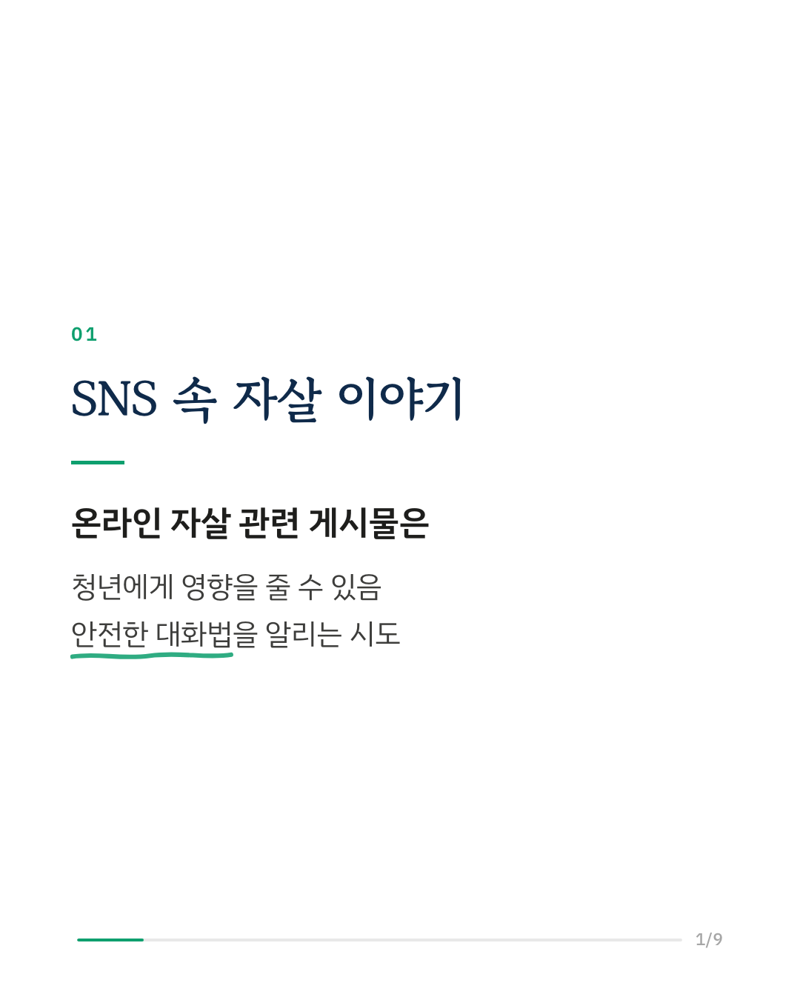
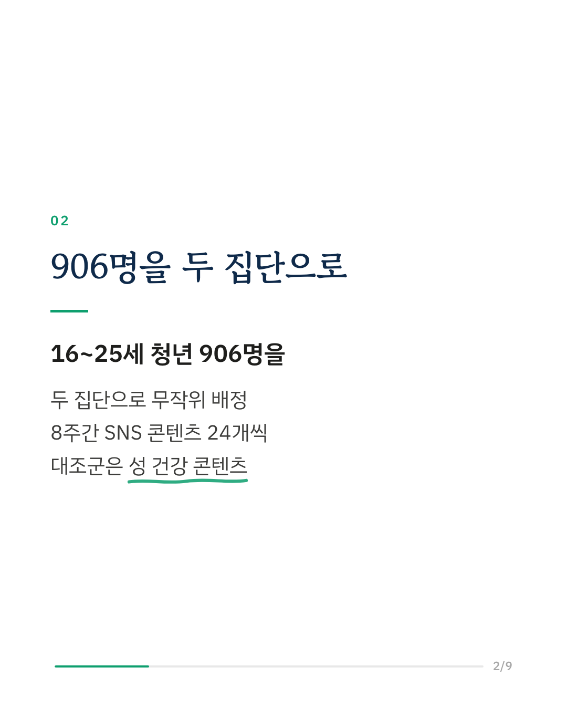
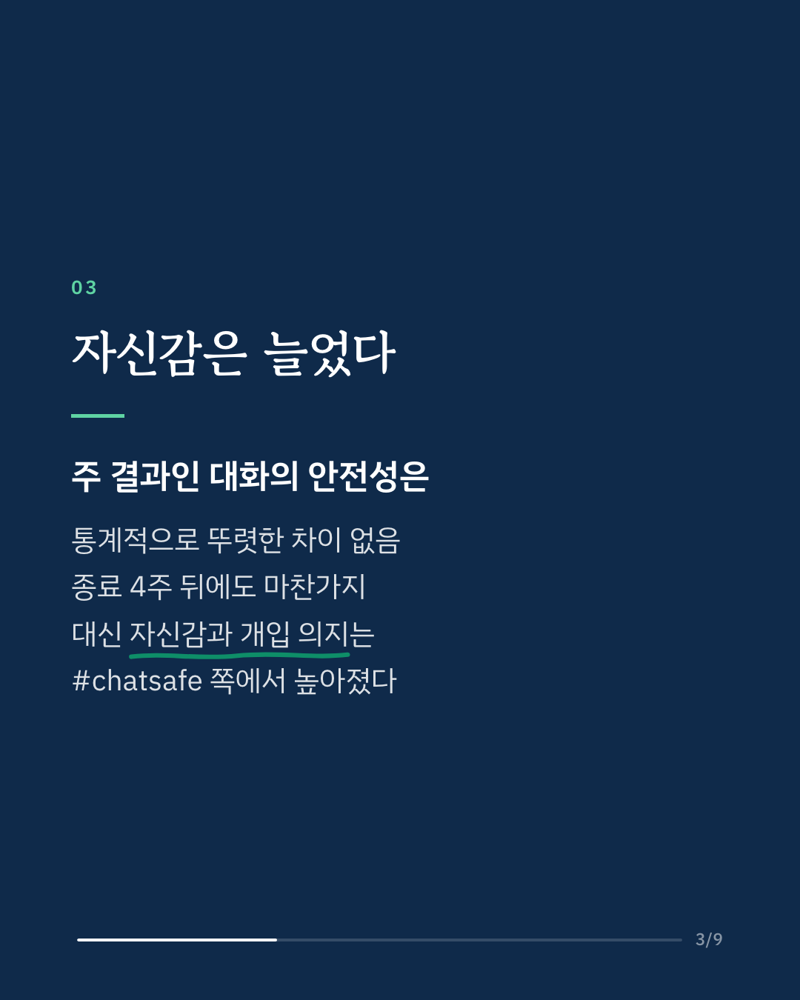
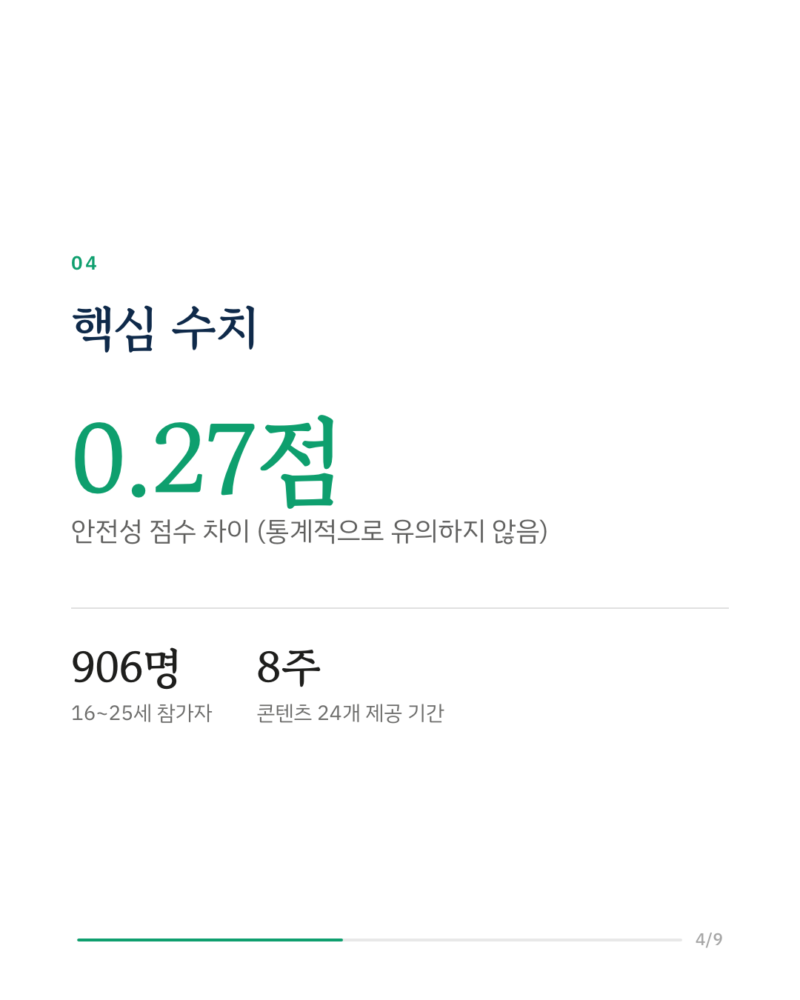
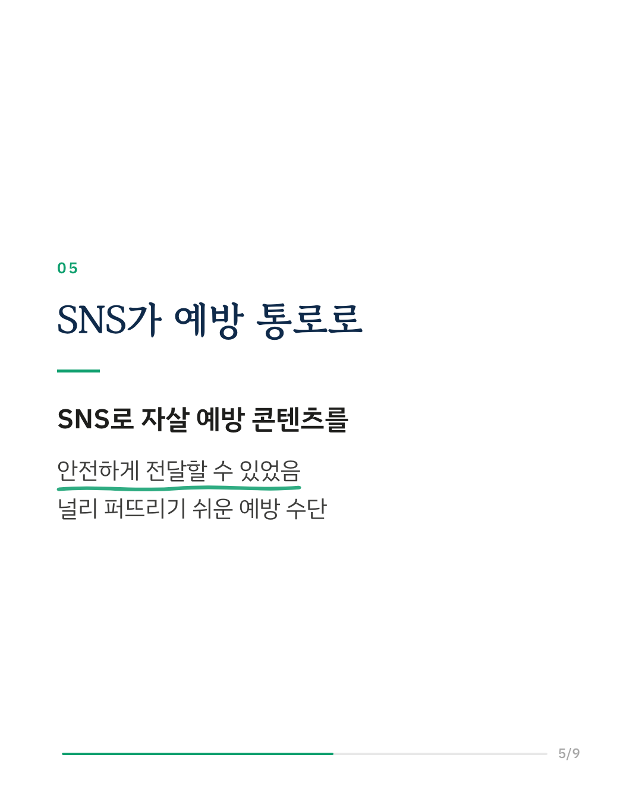
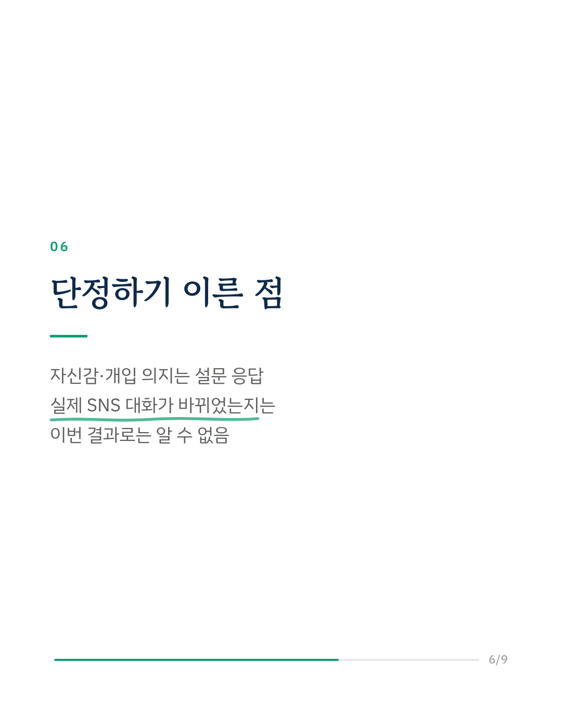
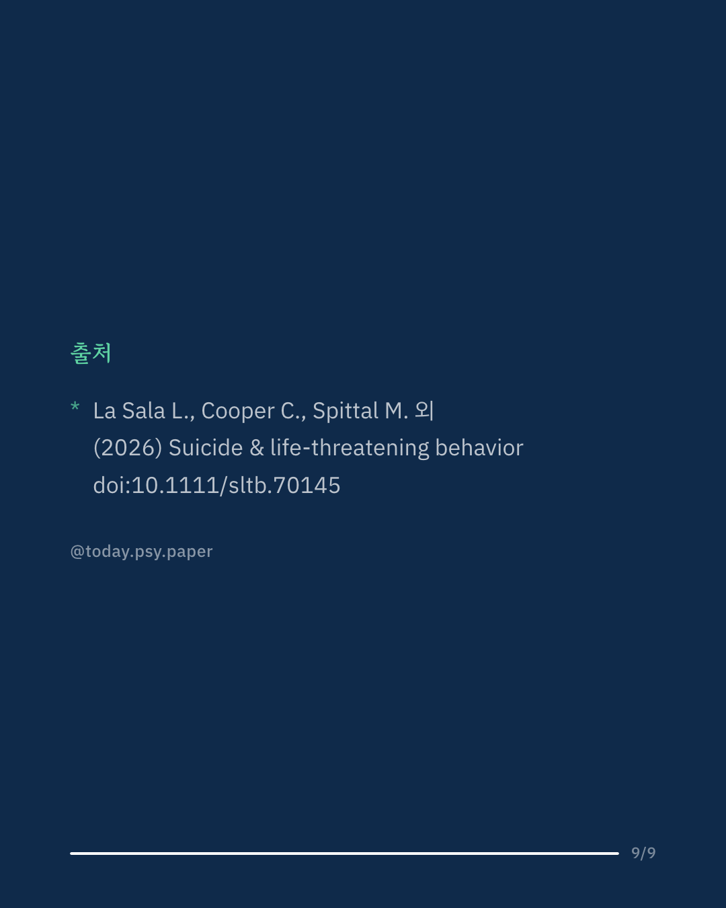

SNS에 올라오는 자살 관련 게시물은 청년에게 영향을 줄 수 있습니다. 연구진은 자살에 대해 온라인에서 안전하게 이야기하는 법을 알리는 자살 예방 콘텐츠 #chatsafe를 16~25세 청년 906명을 대상으로 무작위 대조 시험으로 검증했습니다. 한 집단은 8주 동안 #chatsafe 콘텐츠 24개를, 다른 집단은 성 건강 콘텐츠 24개를 받았습니다. 주 결과인 '온라인 대화의 안전성' 점수는 두 집단 사이에 통계적으로 뚜렷한 차이가 없었고, 종료 4주 뒤에도 마찬가지였습니다. 반면 안전하게 대화할 수 있다는 자신감과, 위험해 보이는 사람에게 개입하려는 의지는 #chatsafe 집단에서 높아졌습니다. 연구진은 SNS를 자살 예방에 안전하고 받아들여지는 방식으로 활용할 수 있었으며, 널리 퍼뜨리기 쉬운 수단이 될 수 있다고 말합니다. 다만 자신감과 의지는 설문 응답으로 잰 것이라, 실제 SNS에서의 대화가 달라졌는지는 이번 결과만으로 알 수 없습니다. Suicide & Life-Threatening Behavior (2026), 'Testing the Impact of the #Chatsafe Intervention on Young People's Ability to Communicate Safely About Suicide on Social Media: A Randomized Controlled Trial.' 힘든 마음이 들 때는 자살예방상담전화 109, 정신건강상담전화 1577-0199에서 도움을 받을 수 있습니다. DOI: 10.1111/sltb.70145 #자살예방 #청년정신건강 #SNS와정신건강 #임상심리 #정신건강정보 #심리학연구 #논문리뷰
python3 publish.py 43000949